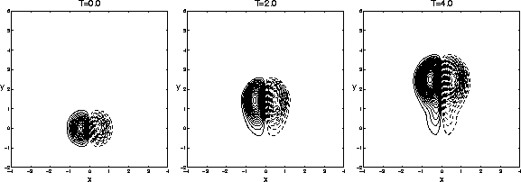
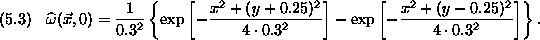
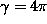
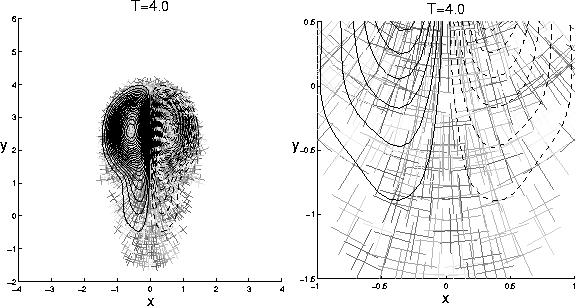
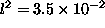
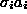
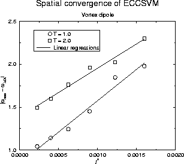
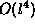
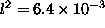

Vortex dipole evolution provides a challenging opportunity for any numerical method because of the high strain rates involved. Unlike more popular same-signed vortex merger examples, dipoles create closed streamlines in the flow, confining regions of positive and negative vorticity. As the dipole propagates along, vorticity diffuses across the narrow boundary layer along the streamline which encloses both regions. Also, vorticity erosion is strongly enhanced at the separatrix at the rear of the dipole [14, 20]. Buntine and Pullen studied three-dimensional Burger's vortices using a spectral scheme in a reference frame that moves with the dipole [4]. The problem reduces to a two-dimensional dipole evolution problem with an external straining field which forces the dipoles together. As it is described in this paper, ECCSVM cannot reproduce this simulation because ECCSVM is strictly two-dimensional. However, a two-dimensional dipole experiment can capture the similar features and difficulties.

For this experiment, the same choice of parameters as in the previous section are sufficient but with different initial conditions:

One can see that the dipole is composed of two vortices (

, ) placed close to one another to generate a high strain. Once again, the fluid viscosity is 0.01. These parameters are slightly more severe than those used by Buntine and Pullen, but this simulation lacks external straining. Buntine and Pullen used a larger separation initially, but the external straining field draws the individual monopoles together into a configuration similar to the one used here. Of course, in the case of this calculation, there is absolutely no customization for the calculation. As shown in Fig. (5.3), ECCSVM adaptively captures the dynamics of this coherent vortical structure. In Fig. (5.4), one can see that computational elements position themselves in the appropriate domain, and the domain coverage appears ideal. One can also see the effect of basis function deformation as blobs orient themselves with respect to local flow deviations.

) dipole calculation. There are 2299 computational elements at this point in the calculation. The X's correspond to
and oriented at an angle

There is no known analytic solution to this dipole propagation problem, so it is not possible to compare ECCSVM solutions to another solution with zero error. Comparing successive runs with themselves yields a

convergence rate, but this reasoning is flawed because one might be converging to the wrong answer. Instead, a simple, stable alternating-direction implicit (ADI) finite difference code provides a reference solution [19]. Though the finite difference code is easy to implement, there is nothing sophisticated about the treatement of boundary conditions, so no comparisons about domain coverage are made. The highest resolution of
is substantially better than the highest resolution of the ECCSVM trial runs as is the temporal discretization. Though successive ADI runs show measurable though converging differences, limited computational resources preclude higher resolution runs, so the highest resolution ADI calculation is the reference solution for comparison with ECCSVM. The resulting convergence is shown in Fig. (5.5).